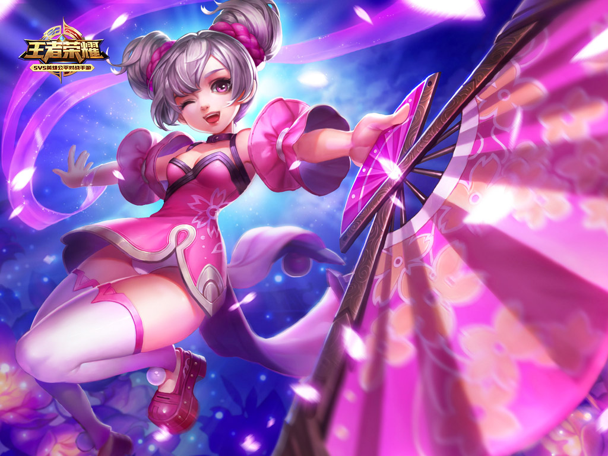
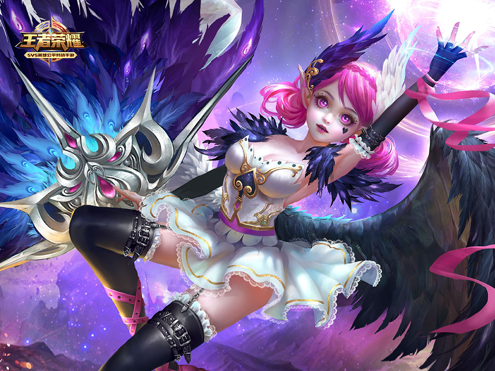
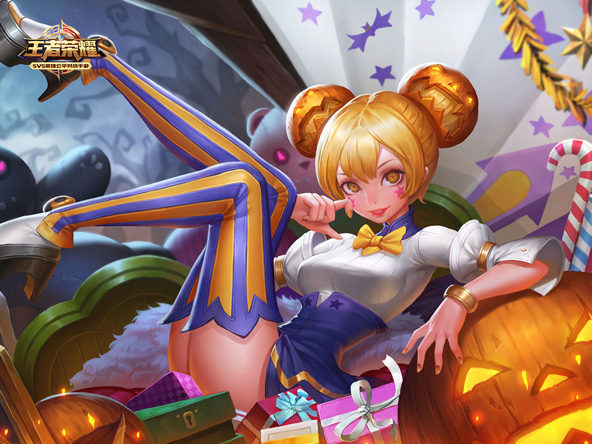

十多年前，江东名门乔氏诞生一对双生女婴时，曾掀起一场轩然大波。对精于魔道的家族而言，双胞胎是不吉利的。最终，双胞胎中的妹妹被送往稷下寄养。也许因为缺少家族的束缚，小乔并没有成为姐姐那样的完美女性，而是更加无拘无束的长大。
成长为少女的小乔终于被接回家中时，人人都嘲笑她的天真，同情心，以及不切实际的乐观——直到他们被她强大的法力所震慑。小乔天生就能将复杂的魔道运用自如，那种天赋就流淌在她的血液里，无需教导也挥之不去。
长辈们担忧暴露家族的秘密陷入恐慌，再度将小乔送往东海边的城镇，要让女孩在乡下终老。
没过多久，奇怪的疾病莫名开始在沿海流行。恐慌中的人们向封锁城镇的士兵发起冲击，最后演变成暴乱。而奉命前来镇压的，正是周瑜。
小乔敏锐意识到风的影响。她试图唤起和风吹散带有染病孢子的毒雾.。一片慌乱，她镇定施展的强大法术引起了周瑜的注意。他无情的将少女作为嫌疑犯羁押。两人的初次会面发生在简陋的大牢中，小乔少有固执的说服英俊的军官。整整一夜过去，周瑜终于相信傻气少女的空气传染理论，而她则彻底沦陷在一见钟情的爱慕中。
两人的合作不仅解救人们的生命，意外的收获是，周瑜开始警惕到数百里外的海面上，叫做钓鱼岛的小岛和血族的传闻。几个月后瘟疫终于平息，周瑜返回吴国都城时，他已经无法违背心意丢下小乔独自离开了。对他背负重任的人生而言，小乔是照亮阴暗心海、最璀璨的星辉。
世人皆知，铁血都督周公瑾以坚定的意志和不苟言笑的冷酷著称。任何人都无法动摇他。在他如尺规般明确的人生中，只有小乔是违背人生信条的唯一意外。
“希望和奇迹是存在的！”
返回顶部 返回首页